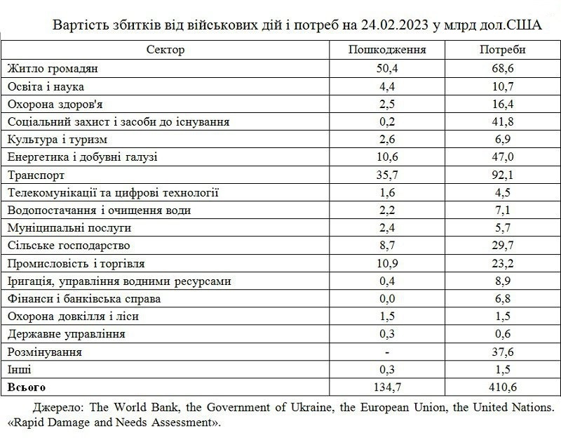

Скільки окупованої території?
"Після успіхів української армії на Харківщині протягом 8-12 вересня вдалося звільнити майже всю область. 4% території регіону, які вказані на мапі - це територія, над якою ЗСУ ще не встановили повного контролю, однак окупант із них практично відійшов, вчинивши акт "доброї волі", – зазначив Братчук.
Також на карті вказано, що окупанти поки що утримують 4% Миколаївщини, 88% Херсонщини, 67% Запоріжжя, 57% Донеччини, 99% Луганщини та увесь Крим.
Україна - найбільш замінована країна світу
30% території України заміновано. В Україні 470 тис. га земель сільськогосподарського призначення заміновано, обстежили лише 17,5% замінованих територій. З них 57 тис. га — сільськогосподарського призначення, зазначили в Міністерстві аграрної політики та продовольства України.
Скільки ж років знадобиться, аби зробити Україну безпечною для проживання? За оцінками експертів - мінімум 10 років.
Екологічні наслідки
За даними Державної екологічної інспекції станом на січень 2023 року, за 11 місяців військової агресії РФ збитки для екології України складають вже понад 1 трильйон 743 мільярди гривень, або понад 47,6 мільярда доларів. І це тільки приблизні розрахунки, поки досі залишається окупованою частина українських територій.
Через російське вторгнення понад 59 тисяч га лісів та інших насаджень були випалені ракетами та снарядами, повідомляє Державна екологічна інспекція.
У воду потрапили вже 1,5 тисячі тонн забрудників.
Також внаслідок 10 місяців війни:
• понад 280 тисяч м² ґрунтів забруднено небезпечними речовинами;
• 11 млн м² земель засмічено залишками знищених об’єктів та боєприпасів;
• майже 686 200 тонн нафтопродуктів згоріло під час обстрілів, забруднивши атмосферне повітря небезпечними речовинами;
• більш ніж 979 тис. м² об'єктів, зокрема критичної інфраструктури, були знищені, а їхні залишки спричинили шкоду довкіллю;
• 932,5 кг – маса сторонніх предметів, матеріалів, відходів чи інших речовин;
• 410 150 000 м³ – обсяг самовільно забраної чи використаної води.
Природо-заповідні зони
Загалом через військові дії окупанта 900 заповідних територій України сьогодні перебувають в небезпеці. Сюди увійшли 1,2 млн га або близько 30% площі всіх природоохоронних територій України. Тут ростуть тисячі видів рослин, які занесені до Червоної книги України і охороняються законом.
Соціально-економічні наслідки
Війна призвела до скорочення робочих місць і доходів, зменшення купівельної спроможності і обсягів накопичених активів. У 2022 році національна економіка втратила 29,2% реального ВВП, а 13,5 млн. осіб змушені були покинути свої домівки. Більше 7 млн осіб опинилися за межею бідності, а рівень бідності сягнув 24% населення.
Експерти Світового банку і Єврокомісії оцінюють пошкодження від війни в Україні в період з 24 лютого 2022 р. до 24 лютого 2023 р. в сумі 134,7 млрд доларів, а потреби у відновленні – 410,6 млрд. доларів.

Якщо говорити про пошкодження або прямі втрати від першого року війни, то за оцінками Світового банку і його партнерів найбільших втрат зазнали житловий сектор (38% сумарних пошкоджень), транспорт (26%), енергетика (8%), промисловість і торгівля (8%), сільське господарство (7%). Зокрема, за рік російсько-української війни руйнувань і пошкоджень зазнали 1,4 житлових приміщень (окремих квартир, будинків), серед них 135 тис. – приватних будинків і 39 тис. гуртожитків.
У загальній сумі потреб на відновлення (410,6 млрд. доларів) транспорту – 116,2 млрд. доларів, енергетики – 75,9 млрд. доларів, промисловості і торгівлі – 68,5 млрд. доларів, житлового сектора – 64,1 млрд. доларів, сільського господарства – 40,4 млрд. доларів.
Що відомо про біженців з України
7 мільйонів 900 тисяч осіб виїхали за межі країни, шукаючи прихистку за кордоном. Це — 20% від фактичного населення всієї нашої держави.